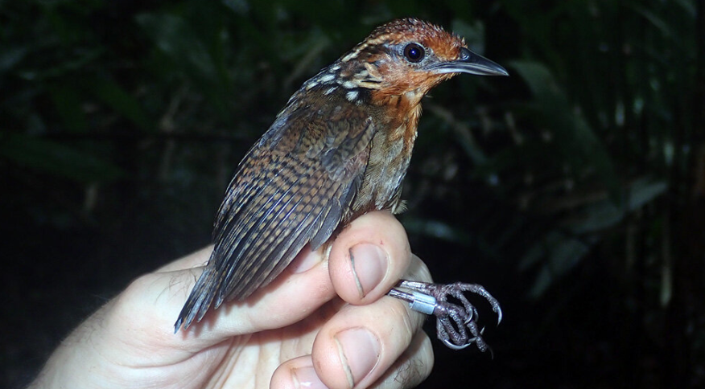
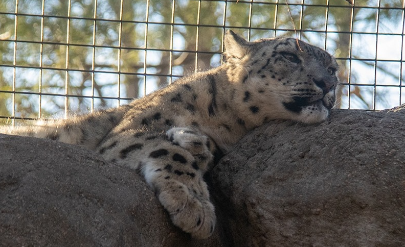
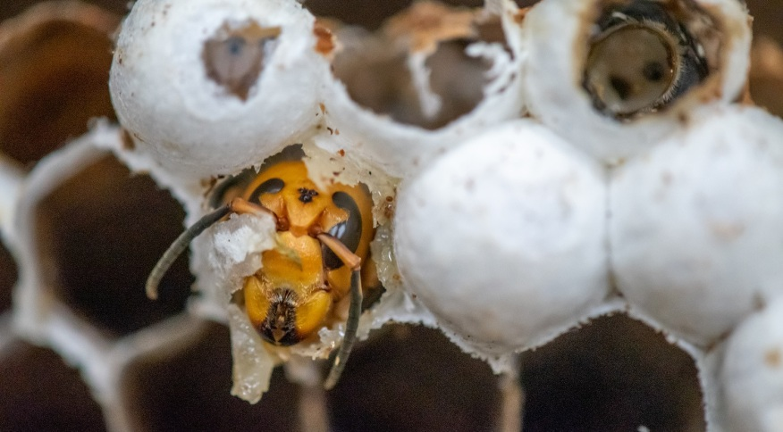
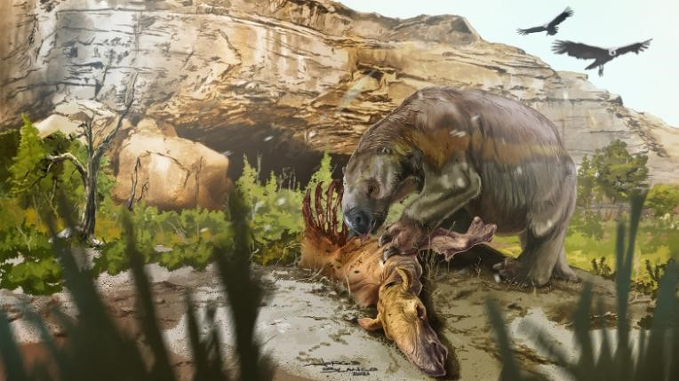

Santos, no litoral de SP, vai permitir cães na praia a partir de janeiro

Prefeitura diz que Santos é a primeira cidade do litoral paulista a liberar cachorros na faixa de areia.
Mudanças climáticas estão afetando o formato dos corpos de pássaros, diz estudo
Pesquisadores estudaram informações de mais de 77 espécies na Amazônia.
Leopardos-das-neves morrem de complicações de Covid-19 em zoológico nos EUA
Animais são nativos da Ásia Central e estão na lista de espécies vulneráveis à extinção.
Gatos podem rastrear presença de humanos usando apenas as orelhas, diz estudo
O estudo, realizado em uma casa e em um café para gatos, observou como os gatos reagem às vozes de seus donos sem pistas visuais.
Abelhas emitem alerta sonoro para defesa contra ataque de vespas assassinas
Insetos produzem sinal frenético que estimula estratégias de defesa para proteção e sobrevivência.
Novo estudo mostra que preguiças pré-históricas se alimentavam de carne animal
Milodontes, uma espécie de preguiça pré-histórica, podiam alcançar o tamanho de elefantes e provavelmente eram 'onívoros oportunistas'.